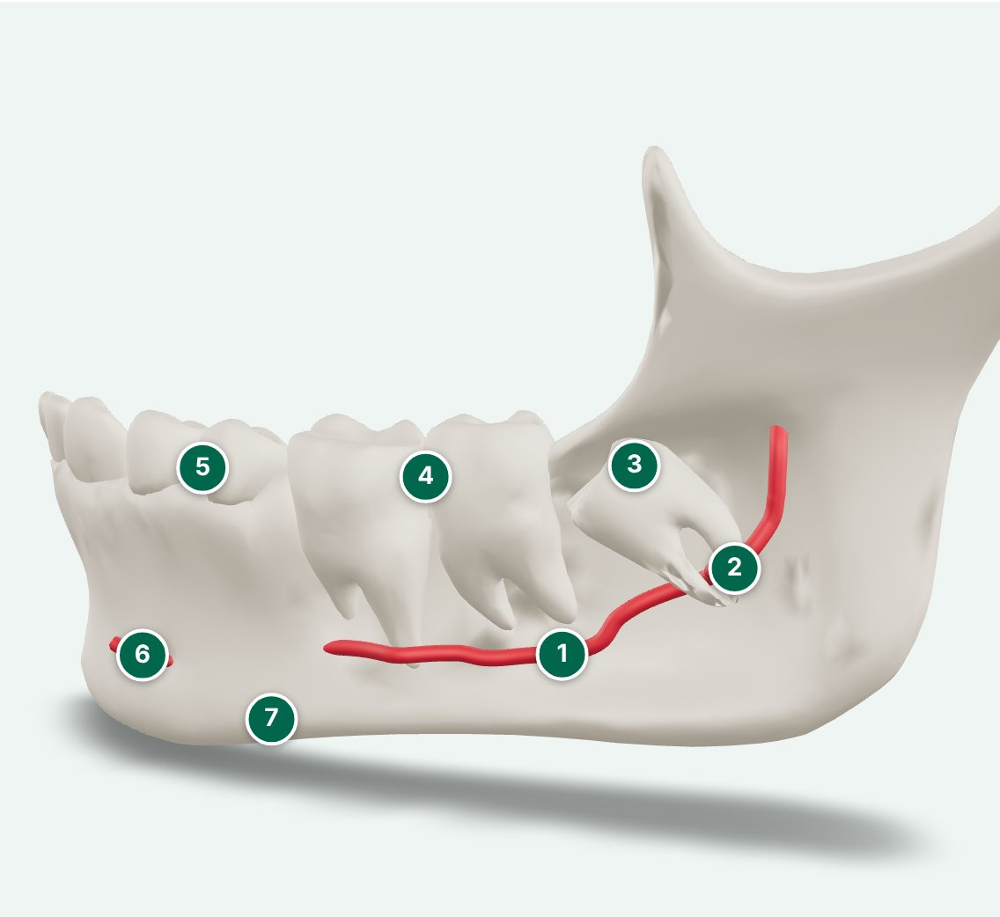
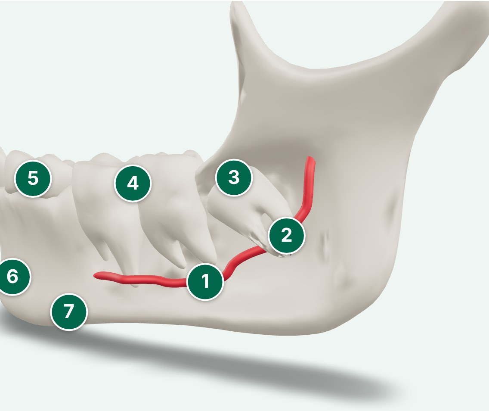

うまっている下の親知らずと、そのそばを通る神経


- 下あごの神経（かしそう神経）
- 親知らずの根
- 親知らず（第三大きゅう歯）
- 第一・第二大きゅう歯
- 第一・第二小きゅう歯
- あごの先の神経（おとがい神経）
- 下あごの骨
- あごの骨と歯
- 神経・動脈・静脈（下あごの管の中）
どんな状態ですか？
親知らずは、いちばんおくにある歯です。「第三大きゅう歯」ともよびます。うまっている下の親知らずは、歯ぐきと骨の下にあり、歯ぐきの上に出ていません。正しい向きに生えることができません。
神経について
下あごの骨の中には、細い管があり、その中を神経が通っています。ここでは「下あごの神経」とよびます。医学での名前は「かしそう神経」です。同じ管の中を、2本の血管（かしそう動脈とかしそう静脈）もいっしょに通っています。1
下あごの神経は、同じ側の下の歯と歯ぐきの感覚を伝えています。2 あごの前の方で、この神経の枝が、骨の小さなあなから外に出ます。この枝を「おとがい神経」とよびます。下くちびるとあごの感覚を伝えています。3
舌の感覚は、別の神経（舌神経）が伝えています。舌神経も、親知らずをぬくときに傷つくことがあります。4
このモデルでは、親知らずの根が、神経と動脈に巻き付いています。
歯をぬくと、なぜ神経が傷つくことがあるのですか？
歯をぬくには、根を骨から取り出す必要があります。根は、神経を囲むように曲がっています。そのため、根を取り出すときに、神経がおされたり、のびたり、切れたりすることがあります。いっしょに通る動脈や静脈が傷ついて、血が出ることもあります。1
下あごの神経が傷つくと、その枝のおとがい神経もうまく働かなくなることがあります。3
神経が傷つくと、どうなりますか？
同じ側の下くちびる、あご、歯、歯ぐきに、次のようなことが起こります。2
- しびれる（感覚がにぶくなる）
- ピリピリ、チクチクする
- 感じ方がいつもとちがう
- いたむ。軽くふれただけでいたむこともある。4
くちびるや顔は、今までどおり動かせます。2
一時的な場合：感覚はもどります。多くは、数週間から数か月かかります。2
ずっと続く場合：感覚が完全にはもどりません。2
年れい：24才くらいより上の人では、神経が傷つきやすくなります。2 年れいが高いほど、感覚が完全にはもどりにくくなります。5 5年間調べた小さな研究では、30才未満の人は全員、感覚が完全にもどりました。30才をこえる人では、8人中3人だけでした。6 ただし、何才から変わるかは、研究によってちがいます。
どのくらい起こりますか？
根が神経に近い親知らずについて、16の研究をまとめた報告があります。結果は次のとおりです。7
3Dの検査が役に立つ理由
ふつうの、口全体のレントゲン写真を「パノラマ写真」とよびます。英語では「OPG（オルソパントモグラム）」といいます。これは平らな写真です。平らな写真では、本当は根が神経にふれていなくても、ふれているように見えることがあります。8 パノラマ写真にも、根が神経に近いことを知らせるサインがあります。9
「CBCT」は、3Dのレントゲン検査です。「コーンビームCT」の略で、歯科用のCTです。根が本当に神経にふれているかがわかります。神経が根のどちら側にあるかもわかります。8 研究では、パノラマ写真よりもCBCTの方が、これをよく見分けられました。10

CBCTは、パノラマ写真よりも多くのエックス線を使います。そのため、パノラマ写真で根が神経に近いかもしれないときに使います。8
歯医者さん・口の手術の先生が提案するかもしれない方法
- ぬかずに、定期的に様子を見る（問題が起きていない場合）。
- コロネクトミー：歯の上の部分だけを取り、神経を囲む根は残します。同じ報告では、この方法の後に神経が傷ついたのは、約200人に1人でした。7 ただし、残した根が動くことがあります。まれに、後で根を取り出すこともあります。
- 歯を全部ぬく。
歯医者さん・口の手術の先生に聞いてみたいこと
- 歯の根は、神経にどのくらい近いですか？
- この場合、神経が傷つく可能性はどのくらいですか？
- CBCTは必要ですか？
- この場合、コロネクトミーは合っていますか？
- ぬかずにおくと、どうなりますか？
参考にした論文
- Juodzbalys G, Wang HL, Sabalys G. Anatomy of mandibular vital structures. Part I: mandibular canal and inferior alveolar neurovascular bundle in relation with dental implantology. J Oral Maxillofac Res. 2010;1(1):e2. doi.org/10.5037/jomr.2010.1102
- Sarikov R, Juodzbalys G. Inferior alveolar nerve injury after mandibular third molar extraction: a literature review. J Oral Maxillofac Res. 2014;5(4):e1. doi.org/10.5037/jomr.2014.5401
- Juodzbalys G, Wang HL, Sabalys G. Anatomy of mandibular vital structures. Part II: mandibular incisive canal, mental foramen and associated neurovascular bundles in relation with dental implantology. J Oral Maxillofac Res. 2010;1(1):e3. doi.org/10.5037/jomr.2010.1103
- Renton T, Yilmaz Z. Profiling of patients presenting with posttraumatic neuropathy of the trigeminal nerve. J Orofac Pain. 2011;25(4):333-344. PMID 22247929. pubmed.ncbi.nlm.nih.gov/22247929
- Queral-Godoy E, Valmaseda-Castellón E, Berini-Aytés L, Gay-Escoda C. Incidence and evolution of inferior alveolar nerve lesions following lower third molar extraction. Oral Surg Oral Med Oral Pathol Oral Radiol Endod. 2005;99(3):259-264. doi.org/10.1016/j.tripleo.2004.06.001
- Kjølle GK, Bjørnland T. Low risk of neurosensory dysfunction after mandibular third molar surgery in patients less than 30 years of age. A prospective study following removal of 1220 mandibular third molars. Oral Surg Oral Med Oral Pathol Oral Radiol. 2013;116(4):411-417. doi.org/10.1016/j.oooo.2013.06.024
- Rico-Barroso L, Barroso-Medel M, Gutiérrez-Pérez J, Serrera-Figallo M, Torres-Lagares D. Coronectomy as an alternative technique to complete extraction of mandibular third molars with risk of nerve injury. Med Oral Patol Oral Cir Bucal. 2026;31(1):e19-e30. doi.org/10.4317/medoral.27459
- Rodriguez y Baena R, Beltrami R, Tagliabo A, Rizzo S, Lupi SM. Differences between panoramic and Cone Beam-CT in the surgical evaluation of lower third molars. J Clin Exp Dent. 2017;9(2):e259-e265. doi.org/10.4317/jced.53234
- Rood JP, Shehab BA. The radiological prediction of inferior alveolar nerve injury during third molar surgery. Br J Oral Maxillofac Surg. 1990;28(1):20-25. doi.org/10.1016/0266-4356(90)90005-6
- Reia VCB, de Toledo Telles-Araujo G, Peralta-Mamani M, Biancardi MR, Rubira CMF, Rubira-Bullen IRF. Diagnostic accuracy of CBCT compared to panoramic radiography in predicting IAN exposure: a systematic review and meta-analysis. Clin Oral Investig. 2021;25(8):4721-4733. doi.org/10.1007/s00784-021-03942-4
このパンフレットは、名古屋大学の研究と、多くの人に向けた情報のためのものです。一人一人の歯についての助言ではありません。一人一人の状態については、歯医者さんや、口の手術の先生が相談にのります。